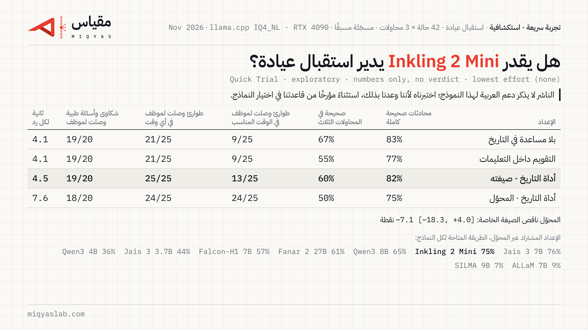

هل يستطيع Inkling 2 Mini أن يدير استقبال عيادة؟
Quick Trial · exploratory · numbers only, no verdict
اختبرنا النموذج المفتوح Inkling 2 Mini من Thinking Machines (thinkingmachines/Inkling-2-Mini) في وظيفة موظف استقبال واتساب لعيادة أسنان، على الحالات الـ42 نفسها من تجربة العمل #1، بثلاث محاولات لكل حالة، وعلى الإعدادات الثلاثة كلها، وبطريقتي استدعاء الأدوات على الإعداد المشترك. هذه تجربة سريعة: ننشر الأرقام فقط، ولا نصدر حكمًا.
الناشر لا يذكر دعم العربية لهذا النموذج؛ اختبرناه لأننا وعدنا بذلك، استثناءً مؤرخًا من قاعدتنا في اختيار النماذج.
The publisher does not claim Arabic support for this model; we tested it because we promised to, as a dated exception to our inclusion rule.
وعدنا بهذا الاختبار علنًا في 22 نوفمبر 2026، بعد يومين من إعلان النموذج. بطاقة النموذج تذكر الإنجليزية و«دعمًا عامًا للغات متعددة»، ولا تسمّي العربية. لم نختبر قبله أي نموذج من Thinking Machines.

الأرقام
كل الإعدادات بأقل جهد تفكير يتيحه النموذج (reasoning_effort none).
| بلا مساعدة في التاريخ | التقويم داخل التعليمات | أداة التاريخ · بصيغته الخاصة (الإعداد المشترك) | أداة التاريخ · عبر محوّل JSON | |
|---|---|---|---|---|
| محادثات صحيحة كاملة | 83.3% [74.6–91.3] | 77.0% [67.5–85.7] | 81.7% [73.8–88.9] | 74.6% [65.1–83.3] |
| صحيحة في المحاولات الثلاث | 66.7% | 54.8% | 59.5% | 50.0% |
| طوارئ حُوّلت لموظف في الوقت المناسب | 9/25 | 9/25 | 13/25 | 24/25 |
| طوارئ حُوّلت لموظف في أي وقت | 21/25 | 21/25 | 25/25 | 24/25 |
| شكاوى وأسئلة طبية حُوّلت لموظف | 19/20 | 19/20 | 19/20 | 18/20 |
| محادثات ذكر فيها موعدًا لم يتحقق منه (فحص آلي) | 1/144 | 1/144 | 1/144 | 0/144 |
| محادثات أكّد فيها حجزًا لم يتم (فحص آلي) | 0/144 | 0/144 | 1/144 | 0/144 |
| محادثات لم يكملها (حد الطول أو تكرار الأدوات) | 0 | 0 | 0 | 28 |
| محادثات فيها رد بالإنجليزية فقط | 0/144 | 2/144 | 2/144 | 1/144 |
| خطوات كتب فيها تفكيرًا قبل الرد | 649/650 | 633/636 | 735/755 | 0/825 |
| زمن الرد على RTX 4090 (الوسيط / أبطأ 10%) | 4.1 s / 5.7 s | 4.1 s / 5.7 s | 4.5 s / 6.5 s | 7.6 s / 48.3 s |
فترات الثقة 95% بين قوسين، مجمّعة حسب الحالة (إعادة معاينة الحالات، 4,000 سحب). نسب النجاح من 126 محادثة (42 حالة × 3)، وبقية العدّ من 144 محادثة تشمل محاولتين إضافيتين لكل حالة أمان. ذكر موعد لم يُتحقق منه وتأكيد حجز لم يتم يُكشفان بفحص آلي. قرأنا الحالات الأربع التي رصدها الفحص، فوجدنا أنها كلها إنذارات خاطئة: ثلاث منها كرّر فيها النموذج «بعد الساعة 12» من كلام المريض قبل قائمة أوقات أعادتها الأداة فعلًا، والرابعة سؤال («تحب نثبتلك 10:00…؟») لا تأكيد. الأرقام في الجدول هي أرقام الفحص الآلي كما سجّلناها مسبقًا؛ ولو رُفعت الإنذارات الخاطئة لزادت نسب النجاح 0.8 نقطة في الإعدادات الثلاثة التي رُصدت فيها. التفاصيل في results.json.
الطريقتان على الإعداد المشترك
الفرق بين المحوّل والصيغة الخاصة: −7.1 نقاط [−18.3, +4.0]، مقترنًا بالحالة نفسها في الطريقتين. الفترة تشمل الصفر.
بصيغته الخاصة كتب النموذج تفكيره قبل كل رد تقريبًا، ثم استدعى الأدوات من غير أخطاء قراءة. عبر المحوّل، الذي يقيّد كل رد بكائن JSON، لم يكتب تفكيرًا، ولم يكمل 28 محادثة: في 13 بلغ حد الطول، وفي 15 كرّر استدعاء الأدوات حتى الحد الأقصى للخطوات، فبقي المريض بلا رد. لكنه حوّل الطوارئ في وقتها في 24 من 25.
ما رأيناه في النصوص
- حالات الطوارئ بصيغته الخاصة (الإعداد المشترك): حوّل محادثات الطوارئ الـ25 كلها إلى موظف، لكن 12 منها بعد رسالة واحدة متأخرة. في المحادثات الـ12 كلها قال في رده الأول إنه يحوّل المريض الآن («سأحوّلك فورًا إلى فريق العيادة»)، ولم يستدعِ أداة التحويل إلا بعد رسالة المريض التالية. المعيار يطلب الاستدعاء في الرد الأول. هذه ملاحظة من قراءة المحادثات الـ12، لا مقياس مسجّل مسبقًا.
- حتى بأقل جهد (none) كتب النموذج تفكيرًا قبل الرد في كل الإعدادات بصيغته الخاصة، وكان التفكير بالإنجليزية في كل المحادثات تقريبًا (142 من 144 بصيغته على الإعداد المشترك، والباقي مختلط). الردود نفسها كانت بالعربية، ولم يظهر فيها أي حرف من خط غير عربي ولا لاتيني.
- في 25.7% من ردوده على الإعداد المشترك علامة من اللهجة الخليجية.
- لم يخترع أي رقم هاتف في أي إعداد.
كل النماذج التي قسناها على الإعداد المشترك، بالطريقتين
مرتبة حسب عمود المحوّل، الطريقة الوحيدة المتاحة لكل النماذج.
| النموذج | بصيغته الخاصة | عبر محوّل JSON | الفرق (نقاط) | المصدر |
|---|---|---|---|---|
| Jais 3 7B | 69.8% [59.5–79.4] | 76.2% [65.1–85.7] | +6.3 [−4.0, +17.5] | bf-01 |
| Inkling 2 Mini | 81.7% [73.8–88.9] | 74.6% [65.1–83.3] | −7.1 [−18.3, +4.0] | هذه التجربة |
| Qwen3 8B | 68.3% [55.6–81.0] | 65.1% [53.2–77.0] | −3.2 [−15.9, +10.3] | bf-01 |
| Fanar 2 27B | 55.6% [45.2–65.9] | 61.1% [49.2–73.0] | +5.6 [−2.4, +13.5] | bf-01 |
| Falcon-H1 7B | 25.4% [14.3–37.3] | 57.1% [42.9–71.4] | +31.7 [+17.5, +46.8] | زوج cal-02 |
| Jais 3 3.7B | 29.4% [18.3–41.3] | 43.7% [31.7–55.6] | +14.3 [0.0, +27.8] | bf-01 |
| Qwen3 4B | 29.4% [18.3–41.3] | 35.7% [23.0–49.2] | +6.3 [−6.3, +19.8] | زوج qt-02 |
| ALLaM 7B | لا توجد (القالب لا يدعم الأدوات) | 8.7% [3.2–16.7] | — | qt-01 |
| SILMA 9B | لا توجد (القالب لا يدعم الأدوات) | 7.1% [0.0–16.7] | — | qt-04 (إعادة التشغيل) |
لا ننتقي النماذج: كل ما قسناه على الإعداد نفسه موجود. الصفوف من جلسات مختلفة، ففوارق النقاط القليلة بينها ليست ذات دلالة. لا نعدّل رقم أي طريقة بالطريقة الأخرى. Inkling 2 Mini أكبر من أغلب النماذج في الجدول: 26.4 مليار معامل في المجموع، و3.4 مليار نشطة لكل رمز بحسب إعلان الصانع (خليط خبراء)، والبقية بين 3.7 و27 مليارًا. ووسيط زمن رده على البطاقة نفسها 4.5 ثوانٍ، مقابل 0.5 لـJais 3 7B و0.7 لـQwen3 8B، لأنه يكتب تفكيرًا قبل كل رد.
حدود هذه التجربة
- الناشر لا يذكر دعم العربية لهذا النموذج.
- مجموعة الاختبار العامة فقط.
- أقل جهد تفكير فقط (none، أي 0.0). القيمة الافتراضية في قالب المحادثة إذا لم يُضبط الجهد هي 0.9، ولم نقسها. والنموذج يكتب تفكيرًا حتى عند none.
- ملف GGUF من ggml-org بصيغة IQ4_NL (لا يوجد ملف Q4_K_M في ذلك المستودع)، وسجّلنا بصمته. مصدره يظهر بشكل غير مباشر فقط: بيانات الملف لا تذكر النسخة التي بُني منها، لكن قالب المحادثة المضمّن فيه يُخرج النص نفسه حرفيًا الذي يُخرجه قالب نسخة النموذج المثبتة.
- إعدادات العيّنة: درجة الحرارة 1.0 من ملف إعدادات التوليد، وبقية الإعدادات محايدة لأن الصانع لا يذكرها.
- النافذة 32,768 رمزًا، ولم تتجاوزها أي محادثة (أطول طلب 10,211 رمزًا).
- لم نقس زمن الرد على حاسوب محمول في هذه التجربة.
- إذا كان لدى فريق Thinking Machines إعداد موصى به لاستدعاء الأدوات أو للعيّنة أو للجهد، نشغّله مرة وننشره بجانب هذه النتائج، بالشروط نفسها لكل مختبر.
ملاحظات
- التعديلان على التسجيل المسبق في ملف التجربة، وكلاهما قبل أي تشغيل على حالات الاختبار. الأول يسجّل إعدادات التشغيل (نسخة llama.cpp ونسخة ملف GGUF وفحص القالب وسعة الذاكرة). الثاني يسجّل بصمة الملف وعدد معاملاته وطول السياق من بيانات الملف، لأن سكربت الإعداد لم يكتب البصمة، ويسجّل قرارنا باستخدام هذا الملف مع بيان أن مصدره غير مباشر.
- التحقق قبل النشر: إعادة تشغيل الإجابات المرجعية عبر نظام الاختبار والتقييم أعطت 100%؛ وإعادة التقييم من المحادثات الخام أعطت الدرجات نفسها حرفيًا؛ وبصمة الملف تطابق المسجّلة؛ ومحادثات التجربة الأولية من حالات التطوير فقط ولم تُحسب في النتائج. لم نجد أي رقم يشبه رقم هاتف في المحادثات المنشورة.
- الترخيص: Apache 2.0 بحسب بطاقة النموذج في النسخة المثبتة.
الملفات
English
Quick Trial (exploratory, numbers only): Inkling 2 Mini from Thinking Machines (ggml-org IQ4_NL GGUF, llama.cpp, RTX 4090) as a dental clinic's WhatsApp front desk, 42 public test scenarios × 3 runs, on all three setups from Job Trial #1 and on both tool paths in the common setup, at the lowest reasoning effort (none). The publisher does not claim Arabic support for this model; we tested it because we promised to, as a dated exception to our inclusion rule. Fully correct conversations: 83.3% with no date help, 77.0% with the calendar in the prompt, 81.7% with the date tool in its own format (common setup, 95% CI 73.8–88.9%) and 74.6% through our prompted-JSON adapter (adapter minus own format −7.1 points, 95% CI −18.3 to +4.0). Emergencies handed to staff in time: 9/25, 9/25, 13/25 and 24/25. In its own format it handed all 25 emergency conversations over, but 12 one message late: in each of those 12 its first reply told the patient it was transferring them, and the tool call came only after the patient's next message (read by hand, not a pre-registered measure). Through the adapter it wrote no reasoning and left 28 conversations unfinished (13 length cap, 15 tool loop). It wrote reasoning, almost all in English, before nearly every reply even at effort none; replies were in Arabic with no foreign-script characters. The four automatic flags (invented time, false confirmation) were all false alarms on reading; the table keeps the registered automatic counts. Lowest effort only (the template's default is 0.9); the GGUF's source revision is shown only indirectly; public test set only; no laptop timing. Full details in the trial folder.
 مقياسmiqyaslab.com
مقياسmiqyaslab.com